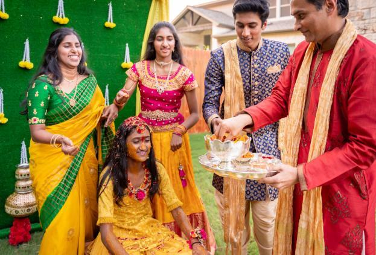

The national flag of Malaysia, also known as the Stripes of Glory (Malay: Jalur Gemilang), is composed of a field of 14 alternating red and white stripes along the fly and a blue canton bearing a crescent and a 14-point star known as the Bintang Persekutuan (Federal Star). The 14 stripes, of equal width, represent the equal status in the federation of the 13 member states and the federal territories, while the 14 points of the star represent the unity among these entities. The crescent represents Islam, the country's state religion; the blue canton symbolises the unity of the Malaysian people; the yellow of the star and crescent is the royal colour of the Malay rulers. It is in the stars and stripes and the Muslim crescent flag families.
As the flag was finalised for official use, the significance of the design were given as follows: red, white and blue – represents Malaysia as a country belonging in the Commonwealth. Crescent and star – represents Islam as the official religion for the Federation, as yellow symbolises sovereignty of the Malay Rulers and their roles as leader of the faith in the constituent states. The eleven-pointed star itself symbolises the "unity and co-operation" of said member states.
Independence Day (Malay: Hari Merdeka), also known as National Day (Hari Kebangsaan), is the independence day of the Federation of Malaya from the British Empire. It commemorates the Malayan Declaration of Independence of 31 August 1957, and is defined in article 160 of the Constitution of Malaysia. The day is marked by official and unofficial ceremonies and observances across the country.donesia is the world's largest archipelagic state and the 14th-largest country by area, at 1,904,569 square kilometres (735,358 square miles).
Bangsa, known as races in Malaysia which consist three main races, Malay, Chinese and Indian. There are about 70% of Malays , 23% of Chineses and 7% of Indians exist in Malaysia. We speak different languages and having different religion, but we share our culture to each other, sharing foods and goods to other races.
Malay
- The largest ethnic group in the country.
- They speak Bahasa Melayu, which is known as Malay.
- The Malay are mostly islam.
Chinese

- Second largest ethnic group in the country.
- They speak Chinese and other languages like Hokkien.
- The Chinese are either Buddhism or Christian.
Indian

- Third largest ethnic group in the country.
- They speak Tamil and English.
- The Indian are all Hinduism or Christian.
Some of the famous and representative building or places in Malaysia
Petronas Twin Tower

Batu Caves

Kota Kinabalu

ESCAPE Penang